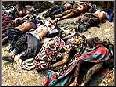
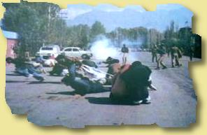

Ok,the deathtoll, in kashmir has risen to 105 peole. Do you understand w hat's going on? 105 people have been VERY brutuly murdered! Yes murdered! and the Indian fags are blaming it on Pakistan (as always, as sed before they have a habbit of lieing.) Those clueless faggots with their media are giving an expression that we did it! d0h@! why would we kill our own people (we arn't dumb as you) you did a masacre of 30 innocent sicks and blamed it on us, and now again this MASS massacre is being blamed on pakistan. welp, fuck off, oh and fuck off's to UN for sitting on their FAT asses and doing nothing, I think it's about time UN and US (bleh, you just intervene where you seek interest, this is the time to prove if you 'care' at all, It's a clear human rights violation.Understand it now, or Never.
The news about the killing is as following, Massacres toll tops 100 in Kashmir: Curfew imposed in troubled areas SRINAGAR, Aug 2: A series of massacres on Tuesday night and Wednesday left around one hundred people dead in occupied Kashmir. Curfews were imposed on Hindu-dominated areas of occupied Kashmir amid concerns of a violent backlash against Muslims. According to police officials, three massacres occurred on Tuesday night in the southern region of held Kashmir, claiming 64 lives, while a further 29 people had been killed in five smaller attacks. All but 11 of the victims were Hindu civilians, police said. In the worst incident, 33 people, mainly Hindu pilgrims, were gunned down on Tuesday in Pahalgam, some 100kms south of Srinagar. Two of the gunmen were also killed. The massacre was followed by another just after midnight, when masked gunmen descended on a small brick-making community, near the town of Anantnag, and shot dead 19 migrant Hindu labourers. In the third major incident, 12 Hindus were shot dead in an attack on Pogal Paristan village in the district of Doda. More than 60 people were injured in the attacks, some critically. The indefinite curfew was imposed in several areas, including Pahalgam and occupied Jammu. "The curfew was a precautionary measure as thousands of pilgrims are stranded in Jammu and there is every possibility of a Hindu backlash," said a police official. No groups have yet claimed responsibility for the killings which came a week after the Hizbul Mujahideen announced a three-month, unilateral ceasefire, prompting the Indian government to offer formal peace talks. Hizbul spokesman Saleem Hashmi said delays by New Delhi in pushing forward the peace process had played a part in the massacres. "They have not positively responded to our truce so how can they blame others for derailing peace?" Hashmi said, warning that India's attitude was jeopardizing the ceasefire. Chief Minister Farooq Abdullah condemned the massacres and insisted the ceasefire would hold firm. "These killings were a clear attempt to sabotage the peace process. However, the peace process will continue," Abdullah said. Following the Pahalgam massacre, the seasonal Hindu pilgrimage to the Armanath cave was temporarily halted by the authorities, but Arun Kumar Gupta, one of 10,000 stranded pilgrims, said he would not be deterred by the violence. Survivors of the massacre near Anantnag said four gunmen had knocked on the door of the labourers' dormitory a little after midnight. "They said their truck was stuck, and asked the men to come out and help," said Shankar, who was recovering in the main Srinagar hospital after being injured in the attack. "When we came out, they started counting heads and then opened fire without any warning," Shankar said.



Is this what we call human rights? Come on , this has to stop. We ask the US and UN to intervene in, and help sort out t
the human right violation by the stupid cunts called 'Indians'
Previous Work (Arhived here)
|
Members, instinct, rave, heataz, miller, RSnake, sniper Greets to mOs, etC!, PHC, #darknet, #flem, #delusion XPERiENCE crew, Attrition.org, Projectgamma.com, hackernews.com, Tr1be Crew packetstorm.securify.org, self-evident.com, hack.co.za rest of #!GFORCE and Freedom fighters of Kashmir (the mujhaideens) oh and #lecole oh and safemode.org, mad shouts to all freedom fighter in Kashmir a .hexa laboratories In5. MAN|AC, Peacemaker, msgmen0t, aekpani, , daces, cen, RR, symetrixx, , root66, sysop, apathy13, antipent, BigPoppa, PoWerPr0, bo-k-rra, core, bs, live, none(leviatan), cruciphux (we gotit rightthis time ;)?), SugarKing espionage, defcon, melt, slader, lyp0x, xessor, max0r, wrLiner, DA^BOMB, rootworrm, axess, hwa-security, !b0f, all peeps at flem, rsh, f0rpaxe, stella, d|v|ne .and who ever we've missed |
Admin: sorry, nothing harmed, just logs deleted.
All suggestions and friendly comments welcome
g-force@nightmail.com
Copyright © 2000 by GFORCE All rights reserved. ;)